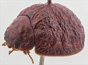
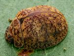
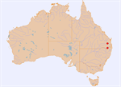

Click on images to enlarge
{kind=link}

Female, Tanduringie, S.E. Queensland
{kind=link}

Female, Stanthorpe, S.E. Queensland
{kind=link}

Distribution
Name
Trachymela sp. Ta129
Reference specimen
1997-377, Tanduringie, 10km N of Cooyar, S.E. Queensland.
Adult Description
Length: ♀ 7.5-7.7 mm [2], ♂ ? mm [0].
Colour: head: mid-brown with black-tipped mandibles, a vaguely defined blackish patch present on each side between eye and median suture; antennae almost uniformly straw-brown, only segment 11 slighly darker on distal extreme; pronotum: brown, same shade as head, with some vaguely defined darker patches in lateral marginal area; scutellum: black; elytra: almost uniformly brown, same shade as pronotum, with the verrucae similar in shade or slightly darker brown, humeral callus same shade as surrounds; punctures slightly darker than interstices on disc, much darker, even black, in marginal area; venter: head completely brown, prosternum black, other thoracic ventrites mid- to dark-brown; abdominal ventrites mid-brown in centre, tending paler towards lateral margins, legs light-brown, abdominal ventrites usually lighter-coloured than thoracic; epipleura black. Cuticular wax: uniformly light-brown and relatively evenly and moderately densely distributed over dorsal surface, dotted with small, greyish patches that may be so faint as to be almost inperceptible.
Shape: Female strongly rounded (H ♂=?%BL, ♀=47-50%BL), greatest height viewed laterally is clearly in front of middle of elytral margin (PGH ♂=?%BL, ♀=49-51%BL); Head; punctures moderately large (pd~2xef) and quite evenly and densely packed. Antennae long (AL ♂=?%BL, ♀=37-40%BL), filiform. Pronotum; almost evenly curved transversely over discal area, with a broad but shallow depression situated behind the outside edge of each eye, each with a relatively compact elevated in its centre; marginal areas continue curvature of discal area and are very slightly explanate at extremes; disc with rather uneven surface and its puncturation not very clearly impressed, similar in size or slightly coarser than on head, evenly distributed and moderately dense in discal area, punctures becoming much coarser towards lateral margins. Finer punctures are scattered among the larger ones. Front margins join lateral margins in a smoothly rounded right-angle, with lateral margin briefly straight before curving smoothly and gradually towards rear margin, widest point of pronotum close to posterior margin. Scutellum; unpunctured, surface finely shagreened or almost smooth. Elytra; surface evenly curved over disc, interrupted by a shallow transverse depression just anterior to middle, margins not or very slightly explanate, punctures variable, mostly distinct and relatively evenly distributed in marginal area and outer margin of disc, but largely obscured by rugose interstices closer to the suture; small, round verrucae, many with a small central puncture, are present mostly in posterior half of disc, scattered almost randomly with their position along the rows almost obscured, but sometimes more prominent along VR3 and VR5; interstices rugulose, with many very small verruca-like elevations and short transverse wrinkles that together almost completely obscure the longitudinal arrangement of the verrucae; surface continuous under humeral callus; lateral margin straight. Vertical extension of epipleura very large (HCE/PW=0.43-0.44). Venter; Prosternal process narrowing anteriorly or almost parallel-sided, lightly closed or oprn anteriorly, a sparse scatter of short setae present on prosternal process, absent from mesosternum, a single seta on anterior, median and posterior trochanters; front edge of metasternum beveled, truncate; inner edge of posterior of epipleura lacking setae. Aedeagus; unknown.
Larvae
unknown.
Eggs
unknown.
Similar species
Ta45 – rather similar species structurally, and it may turn out that Ta129 is conspecific with it, there are no male specimens of Ta129 available to compare the aedeagus. There are a few differences, however, that argue against this. Firstly, the horizontal, inner part of the epipleura does not form a distinct ledge all the way to the apex, as it is in all specimens of Ta45, even those in the far northern extremes of its distribution. Secondly, the marginal part of the elytra is very broad, with values of HCE/PW above 0.43, somewhat above the highest values measured for Ta45. Thirdly, the interocular distance is higher than expected for Ta45. Finally, Ta45 is almost exclusively found on monocalypts, while the only host record for Ta129 is a species in the subgenus Symphyomyrtus.
Notes
This species is so far known from only two female specimens from south-eastern Queensland. Only a single host record is available for it – Eucalyptus melliodora (Symphyomyrtus: Adnataria).
Copyright © 2026. All rights reserved.